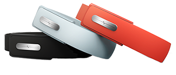

The Wearable Revolution
By: Daniel Wroclawski
Would you buy a wristband that could track the nutrients in your bloodstream? How about a pendant that tracks your dog’s fitness levels? Or perhaps an armband that allows you to control every electronic device in your home without actually touching them? These devices may seem like science fiction, but they are all in development today.
Wearable technology is a rapidly growing sector of digital devices that aim to integrate our digital lives with life outside computer and smartphone screens. Google has released a version of Android for wearables, unsurprisingly named Android Wear. Google is also expected to release its Glass eyegear this year. And ever since Apple CEO Tim Cook hinted at new product categories in 2014, analysts are clamoring for the release of the Apple's fabled “iWatch” smartwatch. Samsung released its first smartwatch back in October 2013, called the Galaxy Gear, and Sony released an updated smartwatch as well. The Galaxy Gear was not well-received and the Korean company updated its smartwatch plans with a new line of Gear smartwatches, dropping Galaxy from the name. The new line includes a well-reviewed fitness smartwatch called the Gear Fit.

Samsung Gear Fit
Currently, wearables are primarily divided between two categories--health and fitness monitoring and glanceable information.
One of the most popular fitness wearables is Nike’s popular FuelBand, which measures how much you move when running, working out, or even walking. Vogue Magazine raved about the device among the rich and famous at the end of last year. So it came as a shock when Nike laid off the majority of its FuelBand engineers. Industry observers now believe Nike is partnering with Apple on its wearable plans. Apple CEO Tim Cook sits on Nike's board of directors.
Nike FuelBand SE
Other big players in fitness wearables are Jawbone’s UP wristband and Fitbit’s wristbands. All of these devices track movement, but the Jawbone and Fitbit differentiate their products with other features. Fitbit’s wristbands also tracks sleep while the Jawbone UP tracks sleep as well as food intake with a companion smartphone app.
Jawbone UP
The other major category of wearable devices is those that provide glanceable information. These devices will notify you of incoming calls, emails, social network notifications, and even information related to your current location. The most well-known and somewhat controversial device in this category is Google Glass. The device, which consists of a small screen, camera, touchpad, and headphones that are built into a glasses frame, will allow users to make video calls, take pictures and videos, and of course, search the web via Google for everything from nearby restaurants to language translations.
“You cannot ignore the fact that you feel kind of distant to someone wearing Google Glass”
A man wears Google Glass while riding a bike/Credit: Google
Many more wearables are reported to be in the works. Numbers vary, but according to a press release from market analysis firm MarketsandMarkets, the wearable device market is expected to be worth $8.36 billion by 2018.
But despite the market valuations and interest from industry heavyweights, wearables still have some obstacles to overcome. “I think 2014 is the year where the really big companies start to really play in this space because right now it’s been mostly small companies like us,” said Karl Martin, CEO of Bionym, which is making a wearable device called the Nymi. The wristband tracks a user’s heartbeat and transforms it into a wireless passcode for making secure payments, or unlocking a car, among other applications.

Bionym Nymi
“From what I can tell, everything is the next baby step, which is fine, but I don’t know if 2014 is going to be much different than just the next step,” said Mike Lovas, co-founder and Chief Design Officer of PUSH, a company creating an armband that measures force, velocity, and power for athletes that weightlift.
Public suspicion is a major hurdle. Google Glass has already been banned from some restaurants and bars because of fears that users might record unwitting patrons with the built-in camera.
“You cannot ignore the fact that you feel kind of distant to someone wearing Google Glass,” said Martin Kallstrom, CEO of Narrative, a Swedish company building the Narrative Clip, a small “lifelogging” camera that clips onto clothing. “There is something between you and them.”
Narrative Clip
“There’s always been those taboos and kind of awkward moments of when technology gets introduced,” said Lovas. Wearables take that one step further. “It does look weird when you have a computer hanging off another person’s head,” he said.
“Fashion and technology have not found perfect harmony yet, but the work is in progress”
A man wears a Misfit Shine on his lapel/Credit: Misfit Wearables
Wearable companies are trying to overcome these stigmas through designs that could make new form factors fashionable.
Motorola recently revealed its Moto 360 smartwatch. The device features a beautiful circular display and runs Google's Android Wear. Tech pundits have already begun lauding it as a perfect example of wearable design. But as it is not set for release until the summer, many are still skeptical of its underlying technology due to concerns like battery life.
Moto 360
“Fashion and technology have not found perfect harmony yet, but the work is in progress,” said Melissa Thompson, CEO of TalkSession, a health startup looking to connect mental health providers with clients via video conferencing technology, and creator of the QUANTIFIED30 blog. Thompson tested 30 different wearable devices over the course of a month for one of her posts. “Notably, one of Google Glass’ earliest debuts was on the runway at the Diane von Furstenburg fashion show,” she said.
Google Glass
Kallstrom and Thompson both cite Misfit Wearables, maker of an activity tracker called the Shine, as an example of just how fashionable wearables can be. The Shine looks like a piece of jewelry. It is essentially a metallic button that comes in colors like champagne and topaz. It can we worn on a lapel, or as part of a bracelet or necklace.
Misfit Shine
“I wear the Shine by Misfit Wearables attached to a white gold omega chain necklace and it looks like part of the jewelry,” said Thompson.
Another issue wearables face is accurate collection and analysis of data. A health-tracking wristband in development is called the AIRO. While similar to devices like the Fitbit or Nike FuelBand, it has received a lot of press attention for its spectrometer, which purports to look through your skin to analyze the nutrient in the user’s blood. The idea is promising, but Thompson said she is skeptical.
“I hope the AIRO works, I really do,” said Thompson, who is skeptical of the accuracy of many wearables, not just the AIRO. During her month-long test of 30 different wearables, she found readings for the same metrics to be “wildly different from one another.”
A representative from AIRO said that the device is still under development and has been accurate thus far for eight out of 10 foods that were tested.
"What is this fuel index? It’s a copout”
A woman wears a Nike Fuelband SE on her wrist/Credit: Nike
Nike got around the accuracy issue by creating its own somewhat arbitrary measurement, called NikeFuel, to measure movement for its FuelBand fitness tracker.
“When the Nike FuelBand first came out, my first thought was, what is this fuel index? It’s a copout,” said Thompson. “I think it was actually fairly smart looking in hindsight after I’ve tested all of these devices.”
Despite these issues, industry observers like Thompson expect that wearables will ultimately help users become healthier. Thompson compared the potential impact to that of food labeling in the 1990s, which, studies show, have made consumers more aware of the nutritional value of food.
Apple is rumored to be working on an app for tracking health metrics called Healthbook. 9to5Mac reported that the app will track metrics like heartbeat, blood pressure, blood sugar, nutrition, sleep, and more. The app is rumored to be part of Apple's next mobile operating system, iOS 8. It is still unclear as to whether this app will only work with the fabled iWatch, or if it will become a platform for third-party wearables.
“These devices give users a rarely-before-seen set of data on health-related factors,” said Thompson. “This heightened awareness should result in healthier habits and choices.”